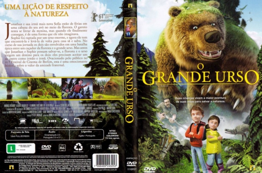

Outro Título:Den kæmpestore bjørn
País:Denmark, 75 minutos
Idiomas falados:Dinamarquês, Português
Gênero(s):Aventura, Animação, Família, Fantasia
Diretor(s):Esben Toft Jacobsen
Escritor(es):Jannik Tai Mosholt, Esben Toft Jacobsen
Codec:MPEG-2 (DVD)
Número: 5849


Certificado:L
Sinopse:
Jonathan e sua irmã mais nova Sofia estão de férias em uma cabana do seu avô no meio da floresta. O garoto tenta se livrar da menina, mas quando ele finalmente consegue, é de uma forma que ele não imaginava. Sophie foi raptada por um urso enorme, e agora ele tem que encontrá-la e levá-la de volta para casa sã e salva. No curso de sua jornada os dois são envolvidos em uma batalha épica entre um caçador da floresta e o grande urso. Mas antes que Jonathan e Sophie possam salvar-se, a floresta e o urso exigem um destino para os dois: eles precisam aceitar um ao outro como irmão e irmã. Ovacionado pelo público no 15 ª Festival de Cinema de Berlim, esta é uma emocionante história sobre o valor da amizade fraternal.
Elenco:

Tipo de mídia: DVD5,
Legendas: Inglês, Português, Sem Legendas
Alugado: Não
Tela: Anamorphic Widescreen